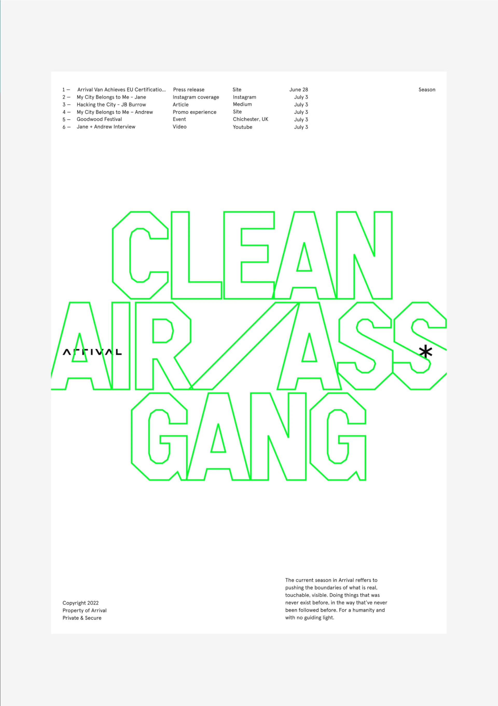
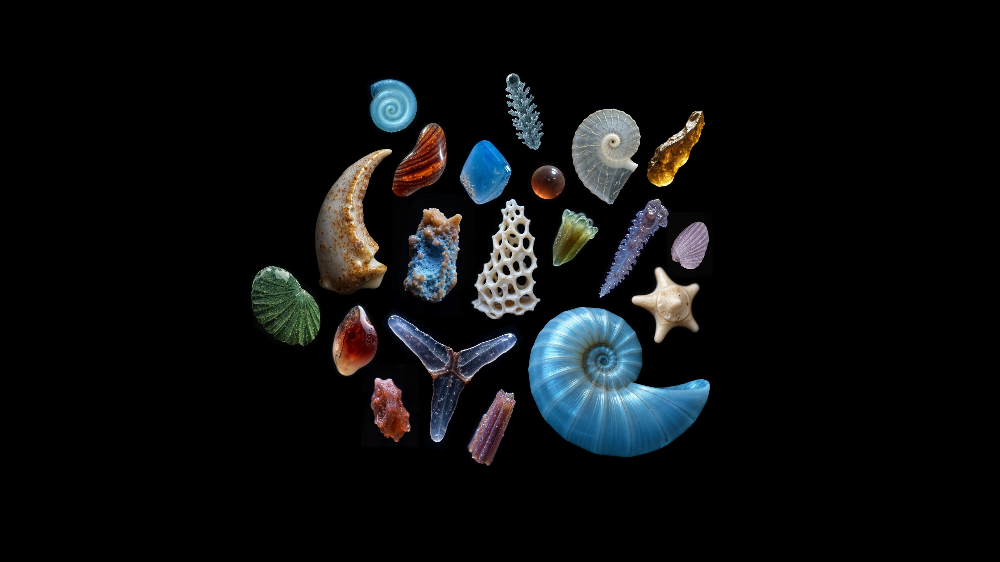
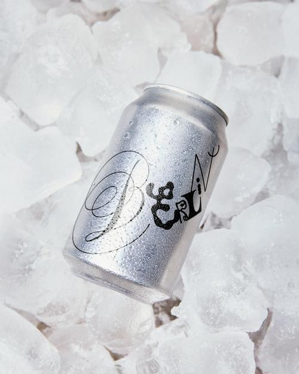
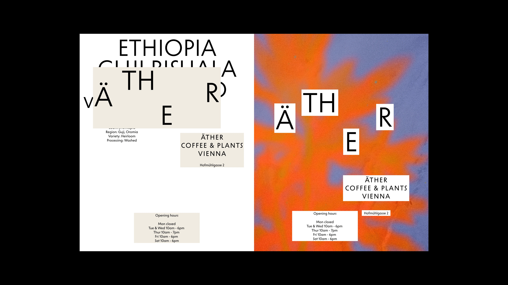
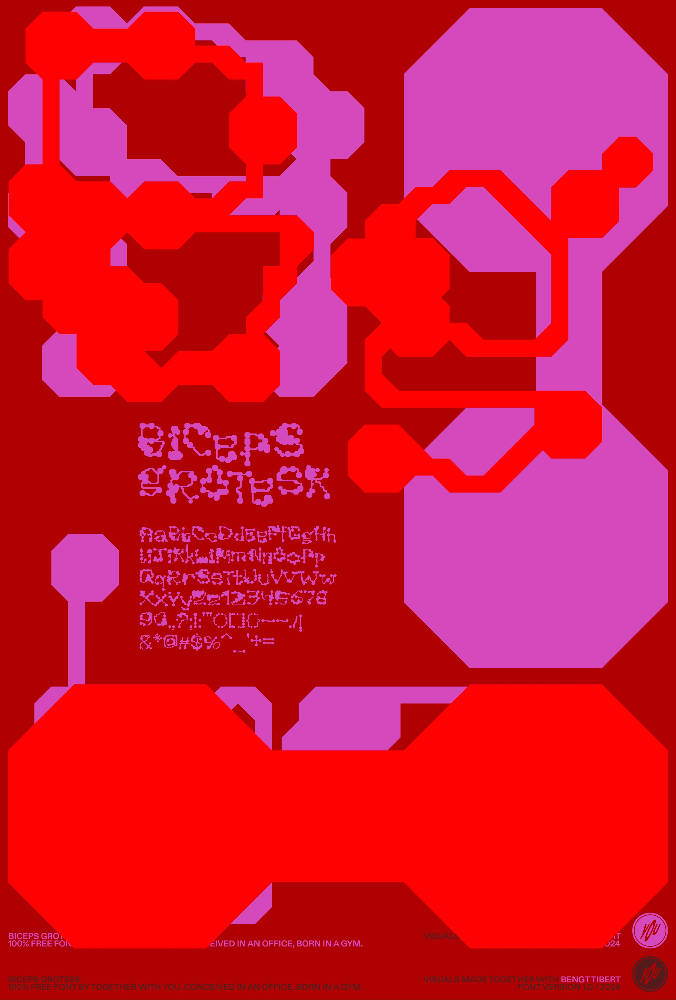

Ян ведёт брендинг, веб и продукт для отраслевого софта, соучредитель «Мастерской» в Петербурге. Он разделяет дизайн на ремесло и культурное влияние и верит, что цельность важнее вкусовщины. У долгого проекта, по его словам, есть генотип, который не меняется, и фенотип, который можно менять под форму.
Что ты понимаешь под дизайн-культурой? Принципы, ценности, подход к решениям, готовность к ответственности?
Я бы дизайн в голове разделил на два понятия. Есть прикладная ремесленная составляющая, я закончил художественно-промышленную академию, где нас учили, что дизайн — это прикладная штука, что должна быть польза. То есть дизайн — это инструмент. И мы как мастера, как ремесленники, должны относиться к нему как к инструменту, включая все производные. Неважно, в чём ты работаешь: в фотошопе или в фигме. По сути, это инструмент для бизнеса, для решения задач.
С этого я начинал, и мне страшно нравится этот подход. Он помогает чувствовать себя востребованным, делать что-то полезное и через это на что-то влиять. Сделал штуку, которой раньше не было, и видишь, как она что-то поменяла в жизни или в бизнесе людей. Желательно в лучшую сторону. И вот этот момент влияния всегда самый интересный. Потому что дизайн никогда не про макеты. Макет — это проектная документация и больше ничего. Мне никогда не было особо интересно макетирование, оно техническое. Если обувной мастер создаёт пару обуви, то интересно не она сама по себе, хотя она может быть красивой и приятной. Важно, как её носят, кто её надевает, как использует.
Есть вторая часть, культурное влияние дизайна на среду, на людей, на социум. К ней я пришёл сильно позже, и про неё мне нравится рефлексировать. Современный мир — наследник постмодерна. Люди в системе потребления начали симулировать и проектировать новые ценности. Мы покупаем не просто телефон, а определённый телефон, который для нас чем-то важен. Кто-то любит Apple, кто-то любит технологическое что-то ещё. Мы наделяем утилитарные вещи культурной ценностью.
Дальше можно рассуждать, хорошо это или плохо, как это влияет на среду и на социум. Суть в том, что такова реальность, она состоит из вещей. Это вся, наверное, вторая половина XX века. Дизайнеры в этом смысле довольно значительно влияют на среду, потому что дизайн превратился в инструмент бизнеса и маркетинга. И то, как мы проектируем какие-то изделия, влияет на то, какую ценность они несут, буквально вплоть до восприятия реальности и характера у людей.
Мне нравится сам факт влияния. Дальше где-то это идёт в минус, где-то в плюс. Соцсети, манипулирование, маркетинг, дарк-паттерны, это тоже дизайн, просто когда он используется не во благо, осознанно или нет. Получается, дизайн — это две составные части: ремесленная (про красоту, исполнение, техничность, отточенность, мастерство, крафт) и культурная (про восприятие мира). Особенно это сейчас выражается в цифровой среде. Digital вообще суперинтересен: всё в телефонах, в приложениях, всё перемешивается. Я стараюсь делать самые интересные проекты, те, у которых это влияние побольше, где можно сделать что-то осмысленное.
«Дизайн никогда не про макеты. Макет — это проектная документация и больше ничего».
— Ян Зарецкий
Почему ты в итоге занимаешься тем, чем занимаешься, пришёл из графического дизайна и оказался в диджитал в широком смысле? Что сейчас тебя больше всего драйвит?
Когда я выпустился, пытался устроиться на работу, не очень получалось. Меня тогда спрашивали: «А ты кто? Что хочешь, что умеешь?» А когда выпускаешься, не всегда понятно, что ты хочешь и умеешь. Кто-то определился и нашёл себя. Я себя тогда совсем не нашёл. Вроде с типографикой интересно работать, и какой-то брендинг делать. При этом мне страшно всегда нравились разные цифровые штуки, но веб-дизайн тогда был в настолько зачаточном состоянии, что непонятно было, к чему вообще подступаться. То ли брендинг, то ли графика, то ли плакаты, то ли вообще кто ты, что ты.
В одной студии я условно собесился. Они плечами пожали, сказали: «Ты не определился. Ну, определишься, приходи. А так пока непонятно, за что тебя на работу брать, потому что не очень понятно, что тебе поручать. Вроде ты всё делаешь, при этом ничто на достаточно хорошем уровне». История довольно цикличная была. Лет через пять я снова в студию пытался устроиться. Отказали из отдела веб-дизайна: «У тебя в портфолио какие-то логотипы, а нам веб-дизайнер нужен». И из этой же студии отказали от арт-директора по брендингу: «У тебя там сайты в портфеле, а нам нужен строгой такой коммуникационный чел: брендинг, рекламный постер и вот это всё». Было обидно. Но это я к тому, что мне всегда нравилось широкое поле дизайна. Несмотря на то, что у меня образование графика, я очень люблю искать закономерности и работать в разных средах и жанрах.
Не во всех, конечно, всего не охватить. Но я очень люблю всё, что связано с буквами и коммуникацией, с языком, когда дизайн как язык. И мне страшно нравятся современные технологии. Поэтому всё, что диджитал, сайты, интерфейсы, чем сложнее, тем лучше. Когда это красота системы и какой-то структуры, я туда залезаю, мне очень нравится разбираться. И самый топ, когда это всё объединяется.
Сейчас у меня сервис для геологов: суперабстрактный, очень сложный, с отраслевой терминологией и пользовательскими привычками. Проектировать такой онлайновый сервис — отдельный челлендж, когда приходится глубоко копать и погружаться в бизнес. А мне это страшно нравится, в каждый бизнес погружаться, потому что однотипное и похожее неинтересно. Интересно, когда у бизнеса есть фактура, выразительность, своя опора, на её основе и можно сделать выразительный дизайн.
Продуктовый дизайн мне нравится, потому что он опирается на данные, исследования, сценарии, метрики. По сути, это диагностика пользы, которую мы приносим. На мой взгляд, эти принципы применимы к любому дизайну. Это как сказать: я проектирую стул, я хочу, чтобы на нём было удобно сидеть, с поддержкой поясницы и шеи, а дальше метрически это всё измеряется. Продуктовый подход пытается понять, получилось у нас или не получилось. Каждому дизайнеру разумно об этом думать, если он заинтересован в эффекте своей работы.
И веб — более выразительная штука. Там это уже про мастерство, оно более визуальное, обладает характером. Это смесь цифровых технологий и брендинга, когда за счёт сеток, типографики, текста можно сделать что-то выразительное.
Отдельно я делаю брендинг — буквы, иконки, журналы. Это всё страшно интересно. Брендинг я люблю в том числе за то, что он во многом выходит в офлайн. Несмотря на всю мою любовь к цифре, офлайновые вещи — книги, издания, упаковку — можно пощупать. Это другой опыт сразу же: тактильный, обонятельный, ты держишь изделие в руках. Цифре такое недоступно — пусть она вообще завидует традиционному печатному дизайну. Из-за этого я его тоже люблю, но это уже больше хобби.


Какие проекты были поворотными — меняли восприятие профессии и подход?
С офлайна можно начать. У меня есть офигенная инженерная книга — проектная документация. На заводе обслуживают газотурбинные двигатели, и для генератора такого двигателя клиент выпустил документацию по случаю поставки на производство. Подарочное издание, которое потом дарили топам.
На входе клиент ко мне пришёл с просьбой поменять шрифт в варде: таймс набирать как-то некрасиво. «Ян, посмотрите, что там можно сделать». А я предложил вот такую инженерную книгу. Поработал с контентом, разбил на два книжных блока. Левый — описание техпроцесса. Правый — иллюстрации ко всему техпроцессу. Сначала агрегат разбирают, делают ревизию, потом собирают назад. И все эти процессы здесь иллюстрированы, а здесь описаны.
Это как раз то, что я люблю тащить из веба: сквозная кросс-навигация между двумя домами. Из левого блока — отсылки в правый, в правом в колонке — отсылки на разные места техпроцесса, где этот рисунок участвует. Названия деталей, инструментов. Всё это в граф-дизайнерском ключе, с абстрактными иконками, с разной бумагой. Не печать, тонированная бумага, четыре вида. Печать ниткошвейная, шитьё красными нитками. Оба блока закреплены на одну обложку, поэтому книга разворачивается в две стороны.
Я очень люблю, когда дизайн работает на материале. Изделие — это контент и материал. Если можно выкинуть что-то и оставить только материал, я всегда предпочитаю такое решение. Мне нравится фактура бумаги, я не люблю, когда всё запечатано. То же самое в брендинге, в вебе: если можно поставить только текст, ставлю только текст. Если можно его не писать, предпочту не написать. От этого всё уходит в минимализм.
Веб-навигация в книге решила и техническую проблему. Картинок было около тысячи. Они в техпроцессе повторяются: одно изображение нужно сразу в двух-четырёх местах. Благодаря двублочной структуре в книге мы напечатали из них штук 400–500. Цифры могу приврать, плохо помню. Но книга значительно похудела от этого и стала интереснее выглядеть. По сути, это база данных, как в вебе. Форма и содержание соединились в цельное.
Ещё ноу-хау: отсутствие клея на корешке. Сейчас модно делать книжки без корешка, но клей всё равно дают, и он ощущается клейко. Неважно, какие там журналы «Эрмитаж» у меня стоят с таким корешком: на них всё равно чувствуется. Или книги издательства «Шрифт». Многие в это играют. А мне не хотелось клея, потому что он видим, плюс это лимитированное издание, не тысяча экземпляров. Мы с типографией сделали книгу вообще без клея. Бумажка, корешок, всё бархатистое, нитки скрепляют. Но проклеивать всё равно нужно, иначе развалится: нитки одни не удержат. Поэтому каждую тетрадку с соседней скрепили двусторонним скотчем, полоской в два миллиметра. Скотч специальной стойкости искали, покупали. Мастера в типографии долго мне этот проект вспоминали. Зато получилось огонь.
Книга у меня даже взяла приз в Best Book Design from all over the world в Германии. Потом она мне принесла заказы геологов на интерфейсы, как ни странно, людям понравилось, что сложная система упакована в изящную минималистичную книгу. Пришли с интерфейсами, сказали: «У нас чёрт ногу сломит. Сделай так же просто и красиво».
А как идея появилась? Заказчик пришёл с очень понятным запросом: поменять шрифт. Идея сделать такую книгу пришла сразу или ты двигался итеративно?
Сначала пришла идея, как лучше сделать. Если уж тратить время на проект, хочется делать хорошо. Если идея пришла, преступно от неё отказываться и делать хуже, чем может быть.
Сделал концепт. Сверстал примерно листиков десять, пару шотов в фотошопе собрал на коленке. Не настоящая фотосессия, конечно, но дающая представление: будет книга, где сторона раскрывается, для неё короб. Заверстал десяток страниц с табличками и инженерными иллюстрациями. Рефов особо не было. Я нашёл такие истории, когда книга раскрывается и два разных блока в неё вклеены. Это не супер ноу-хау, но подходит под идею.
Клиенту идея понравилась. Понятно, что бюджет другой: на одно дело тебя попросили презентацию текст поменять, а на другое, когда уже такую штуку делать. Но они поняли, что оно того стоит. Себестоимость чудовищная. Но издание подарочное, тираж небольшой — клиент мог позволить такой эксперимент.
Книгу я делал один — за месяца три-четыре. Команды тогда не было. Сейчас, наверное, что-то технически сделал бы по-другому, но это придирки и совсем уже перфекционизм.

Расскажи ещё про знаковый проект.
Ну вот этот мне нравится. Тут даже не столько о проекте, сколько в целом о работе с клиентом. Я с ними очень долго сотрудничал — лет пять, и делал им почти всё. Когда я к ним пришёл, у них был только маленький логотипчик. Всё остальное они хотели переделать. И мы постепенно переделывали весь дизайн, весь брендинг, упаковку, запускали новые бренды, придумывали брендинг для отраслевых мероприятий. Шаблоны имейл-рассылок. Я потом собрал у них in-house команду по вебу, нанимали разработчиков, пилили полноценную цифровую дизайн-систему, делали сайт с интернет-магазином и продукт-стартап. Параллельно я допиливал коммуникационный дизайн.
Бренды у них супер разные по стилю — одна линейка кофе, другой более корпоративный, какие-то отраслевые брендирования. У клиента не было сначала стратегии — был вижен, а как туда прийти, что сделать, было непонятно. И гигантских бюджетов тоже не было. Это пример, как я брендинг, и цифровой, и коммуникационный — подводил к комплексному решению через десятки маленьких итераций.
Первая работа — журнальчик Barista Journal. Внутри него — каппинг кофе. Кто любит спешелти-кофе, знает: у него все эти вкусовые характеристики. По сути, мы из профессионального каппинга сделали френдли-вариант для людей, не сильно разбирающихся в теме. Не обязательно быть Q-грейдером, чтобы оценивать чашку напитка. Покупаешь журнальчик, у тебя там система, гайд в начале, как правильно заполнять. Пробуешь чашку, опробовал её по разным параметрам, и у тебя такой дневник.
Когда я пришёл, мне казалось: господи, какая чушь страшная, кто будет в своём уме оценивать кофе за деньги в журнале? Я задизайнил его — это был первый проект, который мы сделали из ничего, ни брендинга, никакого. В итоге это бешеными тиражами расходилось. Супер-бестселлер. Я тогда порядком удивился. И понял, что мир, он гораздо. То есть вроде головой понимаешь, ты такой: «Ну да, ну капстон». А прочувствовать — это другой опыт. Видишь, насколько ты вообще видишь только частичку мира и людей, мало их понимаешь.
В этом проекте получилось расширить горизонты восприятия. Понять, насколько люди разные, насколько они могут быть в другой культуре, в другом контексте, насколько важно к этому внимательно относиться. Маленький-маленький проект, но он мне открыл глаза на то, что дизайн — это, по сути, наблюдение. Сначала важно не испортить. Как врач, который проводит диагностику, прежде чем оперировать. Это вообще основа продуктового дизайна, потом стало и в мире, и у меня в подходе. А тогда было внезапным открытием: ёлки-палки, надо не из своих предубеждений ходить, а смотреть на других людей, наблюдать, как минимальными вложениями можно сделать их жизнь лучше, удобнее, интереснее, красивее.
Огромный плюс клиенту — Крису, который агентирует этой компанией. Он визионер, верит в эти штуки, находит их и говорит: «Так, нам туда. И твоя задача — поверить и пойти». И случается успех.
Дальше — на основе успеха журнала, мы поняли, что делать со шрифтами, что хотим ЧБ и шрифты примерно такого типа, иллюстрации. Подтянули флайер, к нему второй шрифт, потом ещё иллюстрации, потом иконку — а-ля иконка какой-то beige. Дальше по ниточке пошёл развиваться брендинг, провели фотосессию, начали задумываться о сайте. Параллельно запускались отраслевые мероприятия: для одного визиточку, для другого постер, сертификаты для школы бариста.
Это интересный случай, когда у людей в бизнесе нет брендинга, а мы не подходим к нему как к комплексному, огромному, сразу интегральному процессу типа «давайте мы возьмём бюджет на год и сделаем». Так выработался принцип, которым я до сих пор пользуюсь. Дизайн проекта, который должен жить во времени, продукт или бренд-система — устроен так. Есть твёрдое ядро, сердцевина, ДНК — как ген, генотип. Он не меняется. Мы знаем, что у нас есть два-три принципа: может быть про типографику, может про сетку, может про что-то ещё. Их должно быть достаточно, чтобы сформировалось визуальное ядро коммуникации.
А всё остальное — фенотип проекта. Он окружает ген и создаёт мягкую оболочку, которая защищает ядро. Эту оболочку можно мять, обстукивать и придавать любую форму. Хотите квадратную, кубическую, сферическую, мятую — как угодно. Это позволяет очень легко строить бренд-системы в динамике и в длительности.
Какой шрифт мы используем в проекте? Нам пофиг. Любой. Все такие: «Как это в брендинге любой шрифт? Преступление». А я говорю, не важно. Мы просто не выбрали ещё. Не знаем. Потому что в этой презентации один, во флайере третий, на визитке четвёртый. Какой выбрать? Прямо сейчас непонятно. Надо поисследовать. Или его надо покупать за бешеные деньги, мы пока не готовы. Поэтому давайте нашим решением будет пока использовать любой шрифт. Главное — разрешить себе быть гибкими.
Тогда проект можно развивать постепенно. В сердцевинку постепенно накапливаются решения. Через год — а, всё, шрифт определили. Теперь знаем, какие постеры. Теперь про моушн подумаем. Метафора кофейного зернышка, оно сначала зелёное, потом обжаривается, его мелют, заваривают. И это превратилось в моушн, потом размножилось на паттерн, потом в сайте использовали. Простая штука, но не сразу появилась. Полезно бизнесу — помогает из ничего сделать крепкую основу, без больших моментальных вложений. И гибкость остаётся.
Это отличается от привычного подхода, когда сначала пишется гайд, а потом всё под него. Идея, что цельность приходит во времени, кажется новой.
Здесь ирония любого проектирования. Ты правильно говоришь — пресечить и сделать. Но после того, как всё сделано, можно ещё раз пресечить, ещё чего-то накопать и переделать. И в этом плане проект получается незаконченным. С клиентом тоже не всем подходит — некоторые такие: «В смысле вы хотите ещё денег? Мы же сделали сайт, продукт, брендинг». А ты пытаешься объяснить: мы сделали часть. Всё сделать вряд ли получится, хотя бы потому, что время будет меняться, через год ваш бизнес поменяется, появятся новые вызовы. Развитие нужно.
Это упирается и в бюджеты, и в цели бизнеса. И редко получается так работать, потому что это не проектная история. Если подходить проектно — давайте сначала блокнот сделаем, потом на полгода ушли, вернулись, теперь флайеры, теперь страничка сайта — цельности добиться трудно. Особенно если работает не один дизайнер, а часто разные. Это инвестиция в долгую. Чем-то удобнее, но и минусы есть. По сути, это поддержка клиента, не все дизайнеры такое любят. Кто-то любит сделать проект, закрыть, сдать, получить деньги, и свободен. Это тоже кайфовый процесс по-своему, но с ним такие штуки трудно сделать.
«У любого дизайна, который должен жить во времени, есть твёрдое ядро — генотип, который не меняется. И фенотип — мягкая оболочка, её можно мять под любую форму».
— Ян Зарецкий
Я, на самом деле, не сильно креативный чел, не креативный дизайнер, как считаю. Мне нужен рациональный базис в любом проекте. Пока не нащупываю — у меня ступор и трудно проекты идут. Не могу работать в креативном пространстве. Мне нужно приземляться. Мне нужны ограничения.
В сервисе для геологов, для инженеров и аналитиков, которые анализируют месторождения и проектируют их разработку, я прежде всего нарисовал ограничения. Что мне нравится в дизайне: например, в промышленном — Дитера Рамса вспомнить, изделия Apple, какие-то девайсы. Когда это физический объект, у него очень понятные ограничения. Понятно, как он сконструирован, где батарейка поместится, где процессор, какие кнопочки, сколько их, сбоку или сверху. Если это грамотно сделанная и продуманная система, она выглядит очень красиво. Мне нравится эта техническая эстетика. И эту метафору я люблю перетаскивать в веб-интерфейсы.
Возьмём экран, на котором сервис для геологов. Левая часть отводится под работу с данными. Движение слева направо: данные → обработка → визуализация → кастомизация. И всё это подчинено набору инструментов. Композиционная схема всего интерфейса выражает то, как пользователь работает в системе. Ему не надо прыгать по интерфейсу и думать, где это, где то. Он знает: все источники данных всегда в одном месте, вся визуализация — в другом.
Это даёт дисциплину в проектировании. Это и есть сердцевина, генотип проекта. Мы понимаем, куда новая фича должна прийти. «Давайте построим новый калькулятор» — мы знаем, где он появляется. «Давайте ещё график» — нет, график не сюда, это уже визуализация, мы его сюда поставим. Иногда неудобно, но это дисциплина, необходимая проекту, особенно на нулевой стадии. Потом, когда он начнёт наращивать фичи, это позволит ему выжить, не потерять цельность. Иначе на десятой фиче интерфейс превращается в десять разных мест — становится неюзабельным.
Всё начинается с блок-схем. У меня не один проект так устроен. Иногда это для себя, иногда обсуждаю с клиентом — нужна такая жёсткость или нет, достаточно ли это жёстко в плане структуры, или надо погибче.
Прежде чем мы выпустили эту историю, она сейчас в релизе, закрыли базовую потребность пользователя. Гигантский пласт работы. Шагов из разных инструментов десяток точно есть. Импортировать данные, обработать, посчитать, ещё раз пересчитать, наложить, проверить, ещё что-то с ним сделать. Все инструменты раскладываются по процессу: данные, обработка, анализ, интерпретация и решение. И только когда мы доделали последние инструменты во вкладке «Решения», продукт обрёл прикладную пользу. До этого можно было побаловаться: сделать 50% работы, даже 90%, но не довести до конца. Эта работа заняла несколько лет. Сейчас обрастает новыми фичами.
Иконочки — отдельная история. Этих маленьких иконочек в дереве — 900 штук узлов в данных. Иконок меньше, потому что они повторяются, но всё равно штук пятьсот будет. Плюс какой-то мерч, телеграм-канал оформляли, постеры.
Сейчас я с нейронками довольно активно работаю — позволяют делать интерактивные прототипы быстро. Курсор тот же самый. Я в коде чуть-чуть разбираюсь, и он позволяет мне минуя разработку делать маленькие прототипчики на разные интерактивные взаимодействия. У нас в этой штуке их очень много: специальные клики, специальные инструменты, которые работают по-особому. Это не веб, который все знают. В вебе можно даже не всегда исследование проводить — общепринятый паттерн, и так понятно. А здесь нету такого. Здесь впечатляешься, насколько необычное пользовательское взаимодействие бывает. Дизайнеры воют — им кажется, что это трэш, пользоваться невозможно. А геологи кричат: это самое удобное, что они вообще видели. Или наоборот. Интересная встреча двух миров. И это та же история, что и с блокнотом бариста, важно быть наблюдателем и аккуратно отслеживать потребности пользователя.
«Я не сильно креативный чел. Мне нужен рациональный базис в любом проекте. Мне нужны ограничения».
— Ян Зарецкий



Расскажи про практики и ритуалы вокруг работы.
Основная моя особенность — мне страшно нравится личный контакт и работа вживую. При этом я не люблю офис и строгую посещаемость. Даже когда работал штатным дизайнером, мне всегда была в тягость обязаловка ходить на работу. Хотя с людьми здорово, общаешься, интересно. Когда я ушёл на фриланс-удалёнку, боже, какое это было счастливое время.
При этом я не люблю удалёнку вообще полноценную. Все эти мечты дизайнера: я уеду на бали, буду удалённо делать свой банкинг на созвонах. Мне не близко. Прикольно как месяц провести, может быть два. Но мне нравится с людьми встречаться, погружаться, общаться, в том числе с клиентами. Если мы про фриланс или работу говорим — приезжать в офис, общаться, обсуждать идеи вместе — очень ценная история.
Я к этому пришёл — точнее, осознал, где-то в году 15-м, 16-м. Я и так был такой, но не сразу осознавал. Когда уже несколько лет был на фрилансе целиком, понял: отсутствие общения очень ограничивает опыт. Критическая оценка становится другой, взгляд замыливается. Если дизайнеров вокруг нет, с кем пообсуждать, а заказчики не всегда в этом разбираются, то ты вообще не очень понимаешь, как оценивать свою работу. Клиент вроде бы её принимает, а самому вроде бы не нравится — или нравится. И это всё начинает плыть. Не классное состояние. Не говоря про то, что просыпаешься, встал, и ты что дома, что на работе. Поначалу удобно, а потом не очень.
Мне всегда нравилось встречаться. Я со всеми клиентами стараюсь встречаться очно, обсуждаю, за жизнь общаюсь, в бизнес погружаюсь, езжу по возможности на все производства. На завод инженеров меня не пустили, к сожалению, режимные объекты. Надеюсь ещё попроситься. А для геологического сервиса я в Ноябрьск летал, общался, знакомился с пользователями, смотрел, за что хвалят, за что не очень. Это классно.
Поэтому появился проект Мастерская. С такими потребностями есть и другие дизайнеры — кому удалёнка трудно. Хочется перепыляться идеями, мыслями делиться, концепциями. Подглядывать друг к другу в монитор. Иногда поспрашивать. Недавно я коллегу спрашивал, как у него файлы устроены в фигме, прикладная и довольно скучная штука, но и её интересно обсудить. Не говоря про подходы: круто это или не круто, что в мире происходит, что AI, что мессенджеры, какие технологии появляются. Не говоря про базовую потребность любого дизайнера — кому-нибудь сказать: «Слышь, посмотри, фигня получается или норм». Иногда хочется знать. И таких людей не всегда есть, у кого спросить. Старшего, руководителя, арт-директора — хорошо, если есть. Но не у всех, особенно у штатных дизайнеров.
Мы объединились в 2020 году в проект Мастерская, тогда мы его сделали с Димой Бертолуччи и Сергеем Гуровым. Снимаем помещение, не связаны ни проектами, ни работами. Иногда, бывает, общие проекты случаются, но в целом у всех своя дизайнерская жизнь. Кто-то график, кто-то приложения для стартапов, кто-то в корпорации. Абсолютно разные специализации, и это кайфово, потому что разный круг знакомых, разный взгляд на профессию и опыт.
Сейчас нас пятеро. Своё место, натащили компы, мебель, всё сделали как хотели. Своя посещаемость, свои обеды, как хотим, так работаем. У всех свои требования по своим проектам. Это уже пятое место, по-моему. Гостей зовём, общаемся. Это не кузница идей, не большой проект. Но супер помогает в развитии и оказывает формирующее влияние. Иногда приглашаем мастер-класс — был мастер-класс по буквам, приходили не дизайнеры, просто творческий вечер посреди друзей.
Мне нравится, что проект потихонечку обрастает. Маленькая комьюнити друзей мастерской: кто-то здесь работает, кто-то хулиганит иногда, на мероприятия ездим. На мой взгляд, это возможно именно потому, что мы не рабочий коллектив, не связаны бизнесом, не зависим друг от друга, кто как сделал задачку или какую зарплату получает. Это даёт необходимую свободу.
По итогу встреч мы около года назад придумали выпускать зин. Есть большие коммерческие проекты, заказчики, сервис для геологов. А есть — давайте встретимся, порисуем буквы, бахнем зин на ризографе, напечатаем в один цвет. Хулиганские штуки. Пока два выпуска. Один про буквы, второй — визуальное исследование ритма: что такое ритм, какой он может быть. У каждого по-своему: у кого-то технический, у кого-то художественный, у кого-то позитивный — разные подходы. Простенький проект, нравится. Это интересно даже продуктовым дизайнерам — руками сделать офлайновый дизайн, который потом печатается, можно пощупать.
Что для тебя качественный, хороший дизайн?
Это похоже одновременно и на искусство, и на инжиниринг. Должно быть цельное, не должно быть лишнего. Должен быть базис — концепция, идея, и всё ей подчинено. Если что-то выпадает странным, необъяснимым образом — дизайн проигрывает.
Чем больше в проекте случайностей, тем хуже, как правило, дизайн. Случайности бывают незамеченные дизайнером, не заметил, не знал. От ошибок в композиции до концептуальных: выбрал неудачное цветовое сочетание, палитру, что-то ещё. Чем цельнее проект, тем лучше. Он может быть сложным внутри, может быть простым, не важно. Это может быть зин: одна обложка, одна бумага, одна краска, и всё. И бывает суперсложный составной комплексный брендинг, который на разных носителях должен быть поддержан и при этом оставаться цельным.
Я к дизайну такие критерии предъявляю — цельность. Я не оцениваю с точки зрения вкусовщины. Какой-то он должен быть обязательно: ровный по сетке, или хулиганский, авторский, выразительный, или обязательно решающий бизнес-задачу, или удобный. Кто сказал, что дизайн должен быть удобным? Я не считаю. Иногда дизайн наоборот должен быть неудобным. Всё это должно подчиняться большой цели.
А большую цель формирует бизнес и пользователь. И дизайнер — на мой взгляд, три точки притяжения. Хотя это звучит немножко эгоистично, потому что вроде бы есть только бизнес и пользователь. И за чьи интересы дизайнер? Бизнесу деньги платят, интересы пользователя отстоять больше особо некому — ну, кошельку разве что, в коммерческой истории. Но раз дизайн влияет на культуру и на людей, то дизайнер за это тоже несёт ответственность. И допустимо, что дизайнер немного на себя берёт ответственности и право принимать решения, потому что нельзя диктовать условия, если ты не берёшь ответственность за последствия.
Тогда точек притяжения три — бизнес, пользователь и дизайнер. И в этом треугольнике для каждого проекта находится своя координата. Она и задаёт критерии оценки. Получился он или нет. Хороший или нет. В какой стилистике. В какой технологии. Эффективный, удобный, экономически оправданный — всё это зависит от. Выясняется, как правило, в диалоге. С бизнесом, с клиентом. Бизнес тоже не всегда сразу понимает, какой дизайн должен быть, это тоже в диалоге рождается. Собственники, продакт-оунеры формулируют: нам туда. А нет, давайте докрутим. Давайте в другую сторону. Дизайнер ловко подстраивается, моделирует решения, наблюдает за бизнесом, за пользователем, за культурой вокруг.
Со стороны воспринимать — другой вопрос. Я открыто никого из коллег не критикую — это не очень корректно и осмотрительно. Чтобы корректно критиковать дизайн, неплохо бы понимать контекст, в котором он живёт. Иная критика, на мой взгляд, не очень профессиональная. Я стараюсь коллекционировать вокруг себя дизайн, который нравится. А который не нравится, просто не говорить о нём.
«Чем больше в проекте случайностей, тем хуже, как правило, дизайн».
— Ян Зарецкий
Видишь ли ты конфликт между крафтом и технологиями, или они друг друга усиливают?
Здесь, наверное, я противоречу в чём-то сам себе. Есть Джарон Ланье, который считает, что нам вообще для блага человечества не надо пользоваться социальными сетями — надо их все удалить и не использовать в той модели интернета, которая сейчас есть. Я скорее с ним согласен, хотя пользуюсь всеми соцсетями, какими могу.
И то же самое с AI, с AGI, с прочими технологиями. Сколько в них хорошего и как это влияет. Вроде бы решает задачу — в то же время убивает способность критически мыслить и рассуждать. Это всё так. Но я всё равно за то, чтобы адаптировать новые технологии, применять их, исследовать. Идти вперёд, просто делать это с умом и осторожно. Я за прогресс.
Крафту это никак не вредит, оно его меняет. Если посмотреть исторически, это не новая совершенно история. Появилась книгопечать. Окей, мы больше не свитки смотрим, не на городскую площадь ходим послушать народ. Читаем газету, потом интернет. Это меняет восприятие мира. И опасно тем, что восприятие социума искажается через эти инструменты — ими пользуются как во благо, так и не очень. Это нормальное последовательное человеческое развитие. Давайте просто стараться пользоваться ими во благо. Насколько мы можем на это влиять — как будто бы только в этом сила. Отказаться — значит проиграть. Сопротивляться бесполезно. А возглавить и сделать хорошо — вроде как можно.
Я в этом плане не оптимист, нет. Это довольно дистопичная реальность, потому что машина потребления только раскручивается. Все наши прекрасные соцсети — здорово, мы общаемся с однокурсниками, на маму подписываемся в Инстаграме. Но одновременно все эти энгейджменты и маркетинговые механики влияют на наши мозги, на ценности. Позиция «я покупаю, значит, я существую» мне категорически не близка и не нравится. При этом я понимаю, что добрая половина дизайнеров ровно на это и работает. Мы как дизайнеры счастливо отчитываемся в продуктовых метриках. О, у нас повысился TNPS. О, какие мы классные. О, у нас энгейджмент, у нас retention — вот это всё. По сути, это означает, что мир постепенно погружается в кучину иллюзорных, надуманных ценностей, которые нереальны.
Это всё про Бодрийяра, Гройса, Ланье, про это не говорят, потому что это не приводит к общечеловеческому благу, скорее отдаляет. Всё так и есть. Но и игнорировать это странно. Если есть инструмент — значит, им надо пользоваться, просто грамотно и хорошо, и стараться образованием это компенсировать.
«Отказаться от технологии — значит проиграть. Сопротивляться бесполезно. А возглавить и сделать хорошо — вроде как можно».
— Ян Зарецкий
Дополнительно
- —
О практике
Ян Зарецкий — арт-директор и дизайнер Munk, руководитель дизайн-команд, со-основатель коворкинга для дизайнеров в Санкт-Петербурге Мастерская.